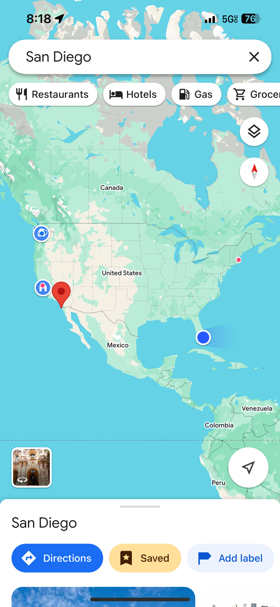
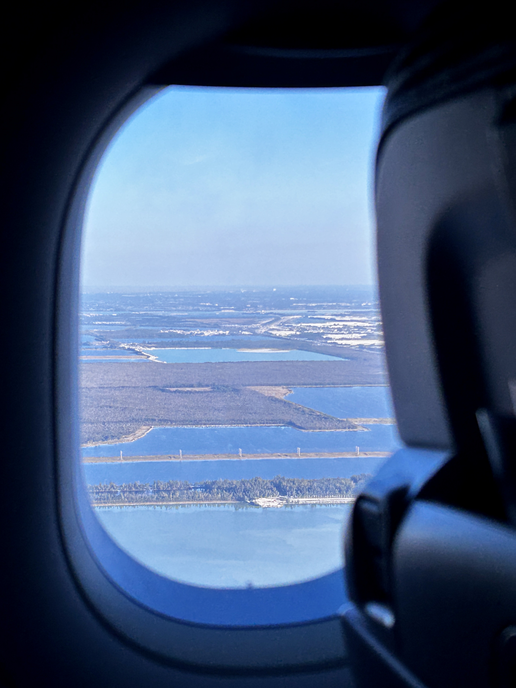
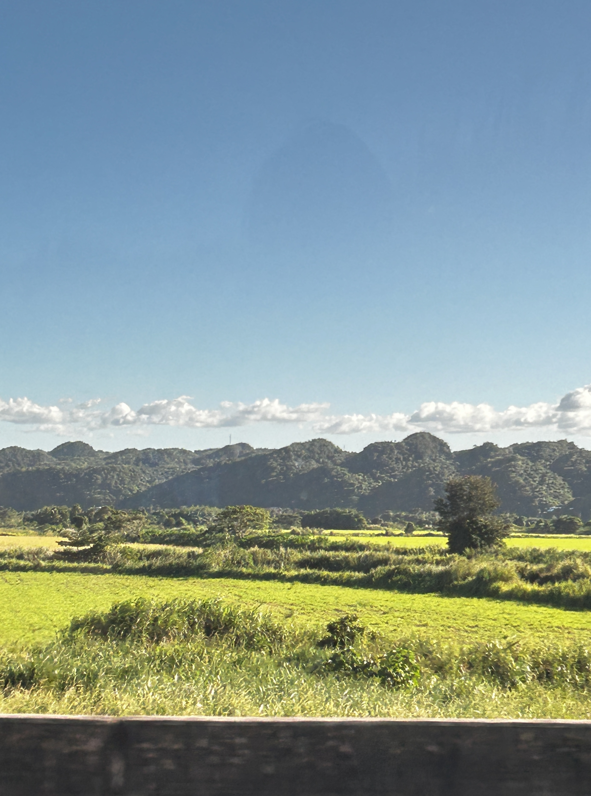
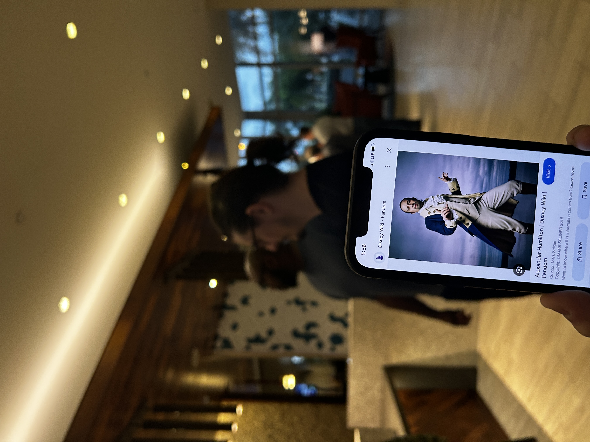
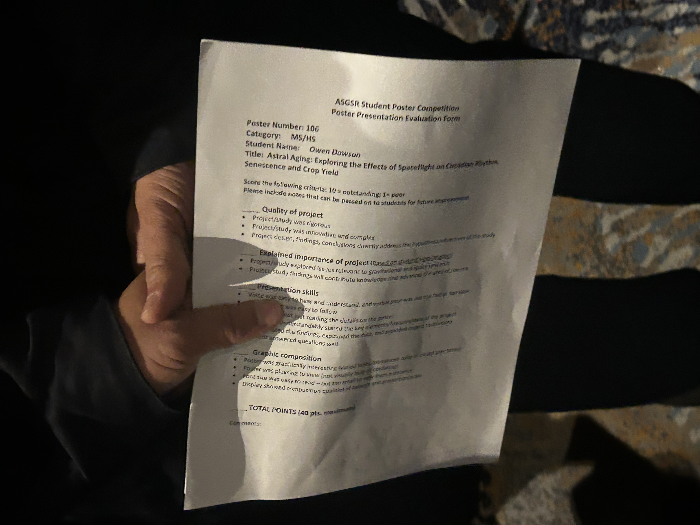
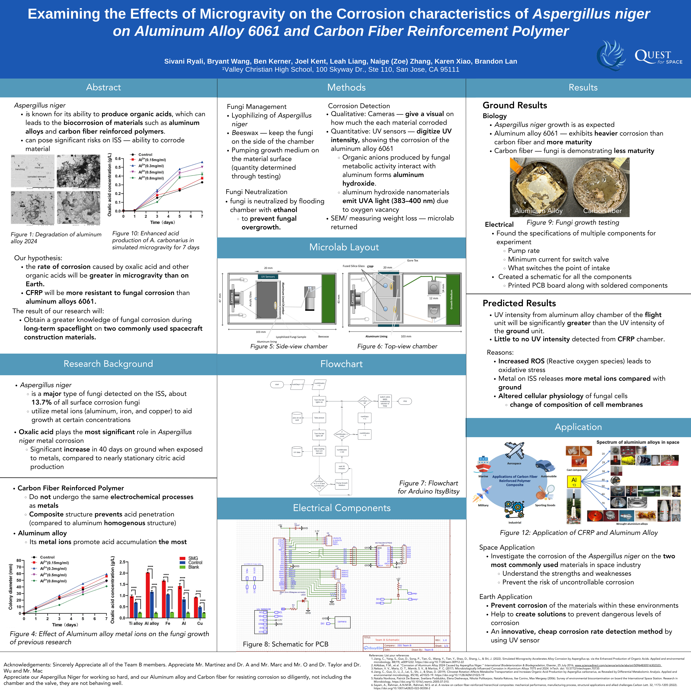
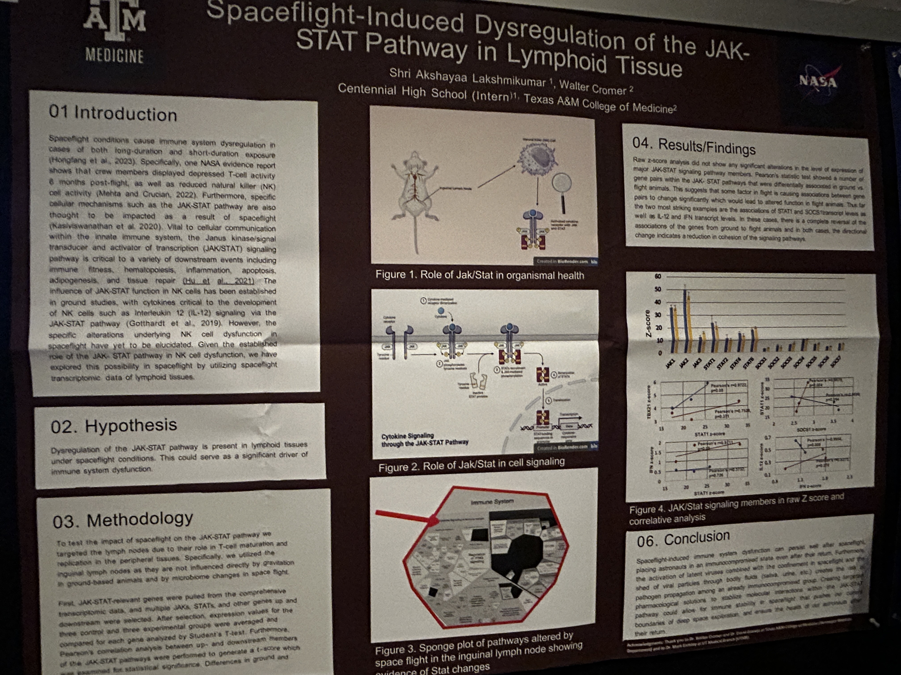
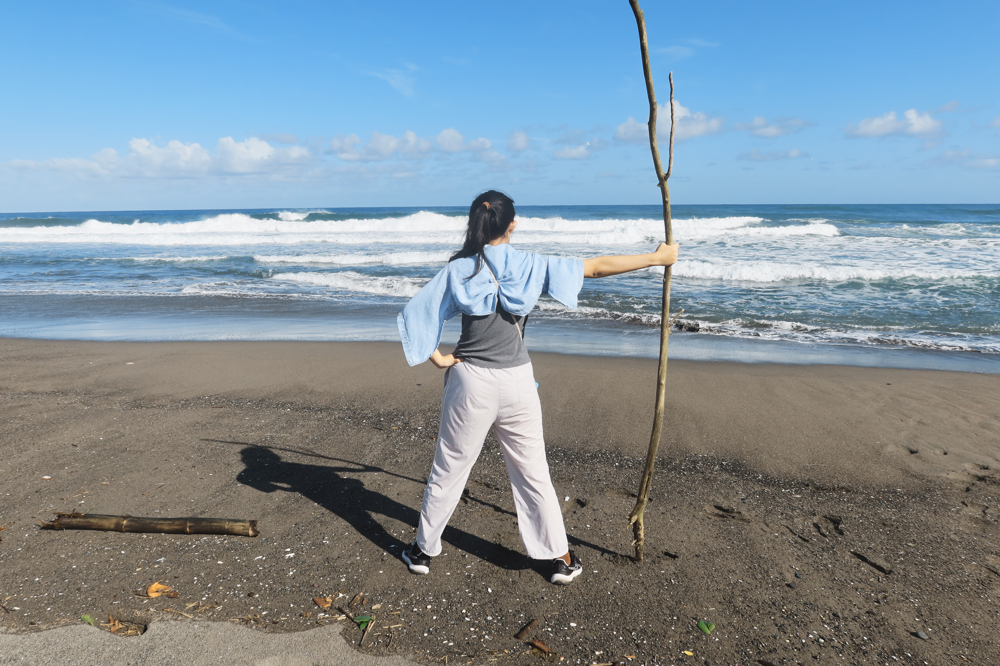

ASGSR
We went to this American Society for Gravitational Space Research Conference in Puerto Rico this year to present our research (without data yet) and ... had LOTS OF FUN! Now I have officially been to the 4 corners of America.









This first year of ISS has been crazy: from wetlab to engineering; from making a research proposal from scratch, getting rejected, and found someone in this world who shares the same interests at a Conference; from sending cold-emails hopelessly and getting responses from a MIT professor and Bio-tech company; from finally getting the experience of science fair that I want for many years...
Everything feels unreal, but exciting, memorable.
At this point, I still don't know which science I wanted to study in the future. But I do know that I love research for fundamental science.